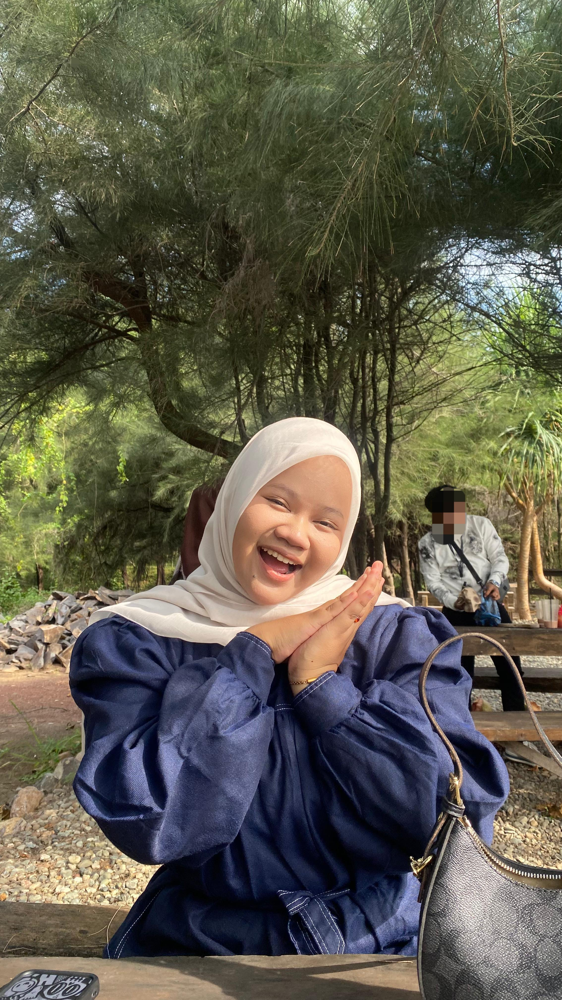
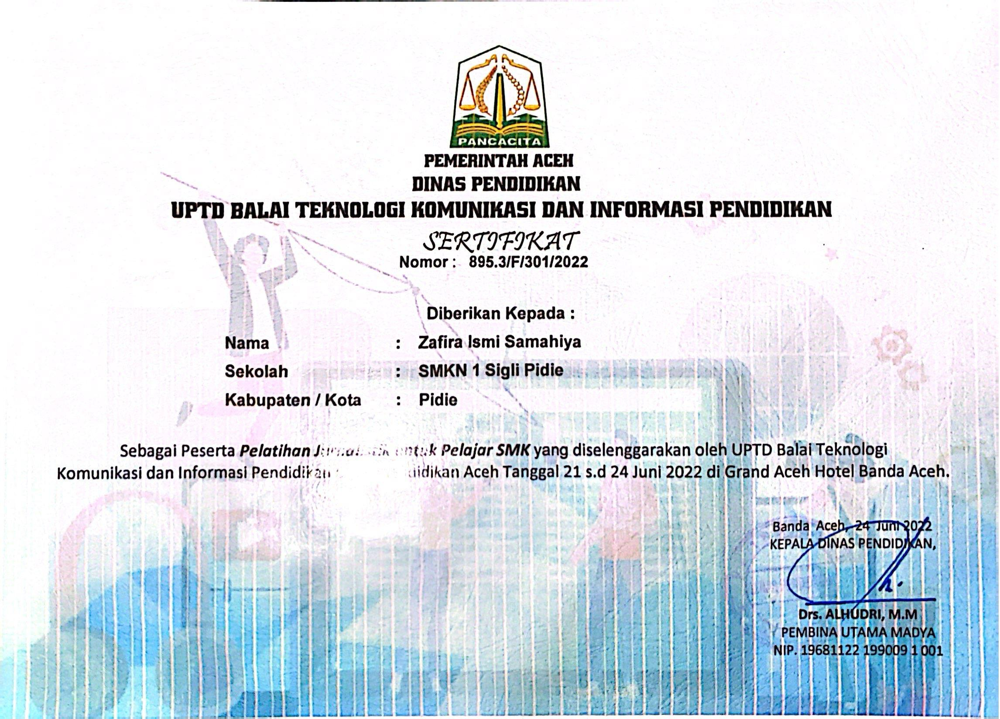
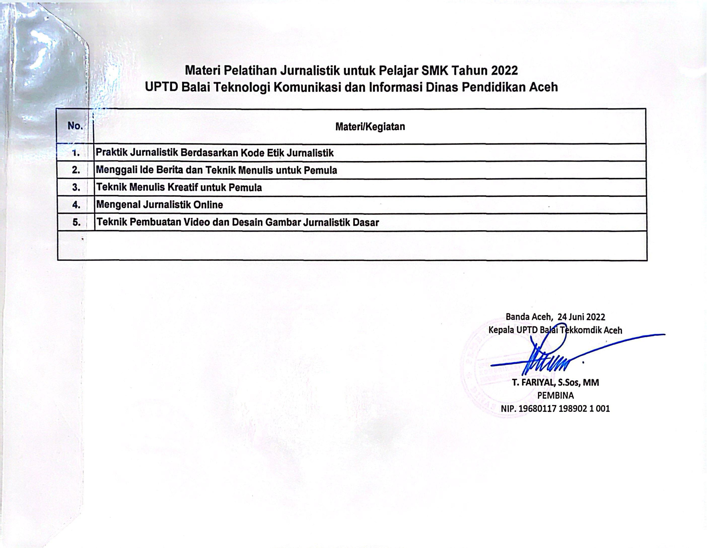

Digital Innovator | Developer | Dreamer |

Developer✨
Saya adalah seorang mahasiswa yang saat ini lagi fokus mendalami dunia web development. Awalnya cuma coba-coba karena penasaran, tapi makin ke sini malah jadi sesuatu yang saya nikmati banget. Saya lagi belajar dasar-dasar seperti HTML, CSS, dan JavaScript untuk membangun tampilan website yang nggak cuma berfungsi, tapi juga enak dilihat dan punya kesan aesthetic. Selain itu, saya juga tertarik ngulik desain UI/UX supaya website yang saya buat bisa nyaman dipakai dan punya pengalaman yang bagus buat user. Buat saya, belajar coding itu bukan cuma soal ngerti syntax, tapi juga soal gimana cara berpikir kreatif dan menyelesaikan masalah. Sekarang saya lagi terus upgrade skill, pelan-pelan tapi konsisten. Harapannya ke depan saya bisa jadi web developer yang nggak cuma jago secara teknis, tapi juga punya ciri khas dalam setiap karya yang saya buat. Dan yaa… semua ini masih proses, tapi saya lagi menikmati setiap langkahnya 🌊✨
HTML
CSS
JavaScript


Website streaming video sederhana seperti Netflix dengan fitur play video dan tampilan modern.
View Project 🚀Website terbaru yang lagi adek kembangkan, tampilannya lebih fresh dan modern ✨
View Project 🚀📧 zafiraismy4@gmail.com
📱 082211611253
📸 @zf.ismy